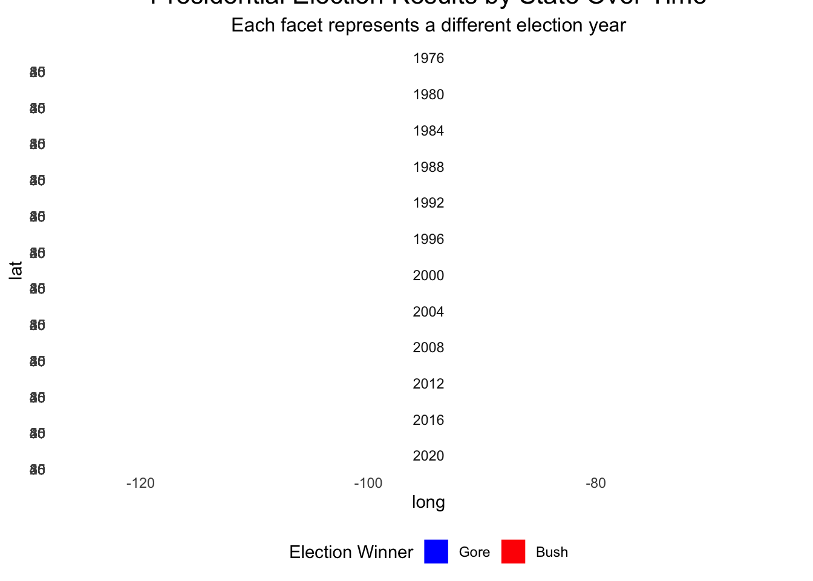

# Mini-Project #03: Do Proportional Electoral College Allocations Yield a More Representative Presidency?
Introduction
In the United States, the President isn’t chosen directly by popular vote. Instead, the winner is determined through the Electoral College, a system in which each state’s influence is tied to its congressional representation. With the 2024 Presidential election drawing near, it’s timely to ask: Would a different allocation method for electoral votes result in election outcomes that better represent the national popular vote?
This project dives into this question, analyzing historical congressional and presidential election data from MIT’s Election Data Science Lab and UCLA Congressional Boundary Files. By exploring electoral vote distributions under different allocation rules, we aim to see how alternate methods might change election results.
Background
How the Electoral College Works
The U.S. Constitution sets the foundation of the Electoral College, granting each state a number of electors equal to its congressional delegation: the number of House representatives plus two senators. Most states follow a winner-take-all rule, where the state’s popular vote winner claims all electoral votes. However, states like Nebraska and Maine use a district-wide allocation method, awarding votes by individual district results, with two additional votes for the statewide popular winner.
In this analysis, we’ll test four allocation strategies to see their potential impact: 1. State-Wide Winner-Take-All 2. District-Wide Winner-Take-All with At-Large Votes 3. State-Wide Proportional 4. National Proportional
Data Collection
Setting Up the Libraries and Data
We start by loading the necessary R packages for data manipulation and visualization.
library(readr)library(dplyr)
Attaching package: 'dplyr'
The following objects are masked from 'package:stats':
filter, lag
The following objects are masked from 'package:base':
intersect, setdiff, setequal, union
library(tidyr)library(ggplot2)library(sf)
Linking to GEOS 3.11.0, GDAL 3.5.3, PROJ 9.1.0; sf_use_s2() is TRUE
library(stringr)library(statebins)library(scales)
Attaching package: 'scales'
The following object is masked from 'package:readr':
col_factor
library(usmap)
**Data Sources and Import
The project uses two primary datasets:
U.S. House Election Data (1976–2022): Details vote counts from congressional races across the 50 states. U.S. Presidential Election Data (1976–2020): Provides state-level vote counts for presidential elections.
Rows: 4287 Columns: 15
── Column specification ────────────────────────────────────────────────────────
Delimiter: ","
chr (6): state, state_po, office, candidate, party_detailed, party_simplified
dbl (7): year, state_fips, state_cen, state_ic, candidatevotes, totalvotes, ...
lgl (2): writein, notes
ℹ Use `spec()` to retrieve the full column specification for this data.
ℹ Specify the column types or set `show_col_types = FALSE` to quiet this message.
Additionally, we download congressional boundary files for spatial analysis, covering elections from 1976 to 2012 from UCLA and from 2013 to 2023 from the U.S. Census Bureau.
congress_shapefiles_ucla <-function(start =95, end =112) { BASE_URL <-"https://cdmaps.polisci.ucla.edu/shp/districts"# Create directory if it doesn't exist target_dir <-"data/congress_shapefiles"if (!dir.exists(target_dir)) {dir.create(target_dir, recursive =TRUE) }for (congress in start:end) { congress_str <-sprintf("%03d", congress) file_url <-paste0(BASE_URL, congress_str, ".zip") dest_file <-file.path(target_dir, paste0("congress_", congress_str, "_shapefile.zip"))# Avoid re-downloadingif (!file.exists(dest_file)) {tryCatch({download.file(file_url, destfile = dest_file, mode ="wb")# Check if the file is downloaded successfullyif (file.size(dest_file) >0) {message("Successfully downloaded shapefile for Congress ", congress_str) } else {file.remove(dest_file)message("Download failed for Congress ", congress_str, ". File was empty and deleted.") } }, error =function(e) {message("Error downloading for Congress ", congress_str, ": ", e) }) } else {message("File for Congress ", congress_str, " already exists. Skipping download.") } }}#functioncongress_shapefiles_ucla(93,112)
File for Congress 093 already exists. Skipping download.
File for Congress 094 already exists. Skipping download.
File for Congress 095 already exists. Skipping download.
File for Congress 096 already exists. Skipping download.
File for Congress 097 already exists. Skipping download.
File for Congress 098 already exists. Skipping download.
File for Congress 099 already exists. Skipping download.
File for Congress 100 already exists. Skipping download.
File for Congress 101 already exists. Skipping download.
File for Congress 102 already exists. Skipping download.
File for Congress 103 already exists. Skipping download.
File for Congress 104 already exists. Skipping download.
File for Congress 105 already exists. Skipping download.
File for Congress 106 already exists. Skipping download.
File for Congress 107 already exists. Skipping download.
File for Congress 108 already exists. Skipping download.
File for Congress 109 already exists. Skipping download.
File for Congress 110 already exists. Skipping download.
File for Congress 111 already exists. Skipping download.
File for Congress 112 already exists. Skipping download.
# Define function to download, unzip, and read a shapefiledownload_and_read_shapefile <-function(year, congress_num) {# Set base URL and target directory base_url <-sprintf("https://www2.census.gov/geo/tiger/TIGER%d/CD/", year) target_dir <-"data/congress_shapefiles"# Create directory if it doesn't existif (!dir.exists(target_dir)) dir.create(target_dir, recursive =TRUE)# Construct filename and paths file_name <-sprintf("tl_%d_us_cd%d", year, congress_num) zip_file <-file.path(target_dir, paste0(file_name, ".zip")) unzip_dir <-file.path(target_dir, file_name) shapefile_path <-file.path(unzip_dir, paste0(file_name, ".shp"))# Download the file if it doesn't existif (!file.exists(zip_file)) { file_url <-paste0(base_url, file_name, ".zip")tryCatch({download.file(file_url, destfile = zip_file, mode ="wb")if (file.size(zip_file) >0) {message("Downloaded: ", file_name, " for year ", year) } else {file.remove(zip_file)message("Download failed for ", file_name, ". Empty file removed.") } }, error =function(e) {message("Error downloading ", file_name, ": ", e$message) }) }# Unzip and read the shapefile if it hasn’t been unzipped alreadyif (file.exists(zip_file) &&!file.exists(shapefile_path)) {unzip(zipfile = zip_file, exdir = unzip_dir) }# Load the shapefile if it existsif (file.exists(shapefile_path)) {return(read_sf(shapefile_path)) } else {message("Shapefile not found for ", file_name, " in year ", year)return(NULL) }}# Iterate over years and download shapefiles based on Congress sessionsbase_year <-2022for (i in0:10) { year <- base_year - i# Determine Congress number based on the year congress <-if (year >=2018) 116elseif (year >=2016) 115elseif (year >=2014) 114elseif (year ==2013) 113elseif (year ==2012) 112elseNAif (!is.na(congress)) { district_name <-sprintf("tl_%d_us_cd%d", year, congress)# Download and read shapefile district_data <-download_and_read_shapefile(year, congress)# Assign the data to a unique variable in the global environmentif (!is.null(district_data)) {assign(district_name, district_data, envir = .GlobalEnv) } } else {message("Congress data not available for year ", year) }}
***Initial Exploration of Vote Count Data
Analyze Seat Gains and Losses in the U.S. House (1976-2022) This code calculates which states gained or lost the most seats in the House of Representatives between 1976 and 2022.
#| code-fold: true#| code-summary: "Show the code"# Load necessary librarieslibrary(dplyr)library(ggplot2)# Filter House data for relevant years and calculate seat countshouse_seats_over_time <- DATA_HOUSE |>filter(year %in%c(1976, 2022)) |>distinct(year, state, district) |>group_by(year, state) |>summarise(total_seats =n(), .groups ="drop")# Calculate seat changes from 1976 to 2022seat_changes <- house_seats_over_time |>pivot_wider(names_from = year, values_from = total_seats, names_prefix ="year_") |>mutate(seat_change = year_2022 - year_1976) |>arrange(desc(seat_change))# Identify top 5 states with highest seat gains and lossestop_gained_states <- seat_changes |>slice_max(seat_change, n =5)top_lost_states <- seat_changes |>slice_min(seat_change, n =5)# Plot top gained seatsplot_seat_gains <-ggplot(top_gained_states, aes(x =reorder(state, seat_change), y = seat_change, fill = seat_change)) +geom_bar(stat ="identity") +coord_flip() +labs(title ="Top 5 States with Seat Gains (1976-2022)",x ="State",y ="Number of Seats Gained") +scale_fill_gradient(low ="lightblue", high ="darkblue") +theme_minimal()# Plot top lost seatsplot_seat_losses <-ggplot(top_lost_states, aes(x =reorder(state, seat_change), y = seat_change, fill =-seat_change)) +geom_bar(stat ="identity") +coord_flip() +labs(title ="Top 5 States with Seat Losses (1976-2022)",x ="State",y ="Number of Seats Lost") +scale_fill_gradient(low ="lightcoral", high ="darkred") +theme_minimal()# Display both plotslist(plot_seat_gains, plot_seat_losses)
[[1]]
[[2]]
As we can see in this graph, the states that gained the most seats are Texas, Florida, California, Arizona, and Georgia. On the other hand, the states that lost the most seats are New York, Ohio, Pennsylvania, Illinois, Ohio, and Michigan. The following table explains the population growth between 1976 to 2022 shifts are the main reason for these changes.
Location
Growth Percentage
Arizona
192.0%
Florida
161.9%
Texas
145.9%
Georgia
125.0%
California
77.3%
USA
52.8%
Illinois
12.5%
Pennsylvania
10.2%
New York
10.1%
Ohio
9.3%
Michigan
8.1%
We see clearly that the Usa is in the middle of the list, and the states that lost the most seats are in the bottom of the list.
# Load necessary librarieslibrary(dplyr)library(gt)# Filter for New York State and relevant House racesny_house_data <- DATA_HOUSE |>filter(state =="NEW YORK", office =="US HOUSE")# Calculate total votes (with fusion) and major party votes (without fusion)fusion_analysis <- ny_house_data |>mutate(is_major_party = party %in%c("DEMOCRAT", "REPUBLICAN")) |>group_by(year, district, candidate) |>summarise(total_votes_all_lines =sum(candidatevotes, na.rm =TRUE),major_party_votes =sum(candidatevotes[is_major_party], na.rm =TRUE),.groups ="drop" )# Determine winners by both fusion and non-fusion scenarioswinners_fusion <- fusion_analysis |>group_by(year, district) |>filter(total_votes_all_lines ==max(total_votes_all_lines)) |>select(year, district, candidate, total_votes_all_lines) |>rename(fusion_winner = candidate, fusion_votes = total_votes_all_lines)|>ungroup()winners_nonfusion <- fusion_analysis |>group_by(year, district) |>filter(major_party_votes ==max(major_party_votes)) |>select(year, district, candidate, major_party_votes) |>rename(nonfusion_winner = candidate, nonfusion_votes = major_party_votes) |>ungroup()# Find elections where fusion changed the winnerelection_outcomes <- winners_fusion |>inner_join(winners_nonfusion, by =c("year", "district")) |>filter(fusion_winner != nonfusion_winner) |>arrange(desc(year))# Display the table with election results affected by fusionelection_outcomes |>gt() |>tab_header(title ="Elections Affected by Fusion Voting System",subtitle ="Comparison of Winners with and without Fusion Voting" ) |>cols_label(year ="Year",district ="District",fusion_winner ="Winner with Fusion Voting",fusion_votes ="Votes (Fusion)",nonfusion_winner ="Winner without Fusion Voting",nonfusion_votes ="Votes (Non-Fusion)" ) |>fmt_number(columns =c(fusion_votes, nonfusion_votes),decimals =0 )
Elections Affected by Fusion Voting System
Comparison of Winners with and without Fusion Voting
Year
District
Winner with Fusion Voting
Votes (Fusion)
Winner without Fusion Voting
Votes (Non-Fusion)
2022
4
ANTHONY P D’ESPOSITO
140,622
LAURA A GILLEN
130,871
2022
17
MICHAEL V LAWLER
143,550
SEAN PATRICK MALONEY
133,457
2022
22
BRANDON M WILLIAMS
135,544
FRANCIS CONOLE
132,913
2018
1
LEE M ZELDIN
139,027
PERRY GERSHON
124,213
2018
24
JOHN M KATKO
136,920
DANA BALTER
115,902
2018
27
CHRIS COLLINS
140,146
NATHAN D MCMURRAY
128,167
2012
27
CHRIS COLLINS
161,220
KATHLEEN C HOCHUL
140,008
2010
13
MICHAEL G GRIMM
65,024
MICHAEL E MCMAHON
60,773
2010
19
NAN HAYMORTH
109,956
JOHN J HALL
98,766
2010
24
RICHARD L HANNA
101,599
MICHAEL A ARCURI
89,809
2010
25
ANN MARIE BUERKLE
104,602
DANIEL B MAFFEI
103,954
2006
25
JAMES T WALSH
110,525
DAN MAFFEI
100,605
2006
29
JOHN R "RANDY" KUHL JR
106,077
ERIC J MASSA
94,609
1996
1
MICHAEL P FORBES
116,620
NORA L BREDES
93,816
1996
30
JACK QUINN
121,369
FRANCIS J PORDUM
97,686
1994
1
MICHAEL P FORBES
90,491
GEORGE J HOCHBRUECKNER
78,692
1992
3
PETER T KING
124,727
STEVE A ORLINS
116,915
1986
27
GEORGE C WORTLEY
83,430
ROSEMARY S POOLER
81,133
1984
20
JOSEPH J DIOGUARDI
106,958
OREN J TEICHER
102,842
1980
3
GREGORY W CARMAN
87,952
JEROME A AMBRO JR
75,389
1980
6
JOHN LEBOUTILLIER
89,762
LESTER L WOLFF
74,319
1976
29
EDWARD W PATTISON
100,663
JOSEPH A MARTINO
96,476
As we can see, fusion voting can be a deciding factor in elections. The table demonstrates that fusion voting increases the likelihood of being elected by enabling candidates to gather votes from multiple party lines. This consolidates support in a way that would not be possible without fusion, giving fusion candidates a strategic advantage.
***Analyzing Presidential vs. Congressional Vote Patterns Across Parties
This analysis explores whether presidential candidates tend to run ahead of or behind their congressional counterparts in the same state. Specifically, we’re investigating if Democratic and Republican presidential candidates receive more votes in a given state than all congressional candidates from their party in that same state.
The following code will compare these vote counts, identifying instances where presidential candidates either outperformed (“ahead”) or underperformed (“behind”) their co-partisans. This will also help us understand if this trend varies over time, across states, or between parties, providing insights into the relative popularity of presidential candidates within each party.
# Aggregate Democratic and Republican presidential votes by state and yearpresidential_votes <- DATA_PRESIDENT |>filter(office =="US PRESIDENT", party_simplified %in%c("DEMOCRAT", "REPUBLICAN")) |>group_by(year, state, party_simplified) |>summarise(total_pres_votes =sum(candidatevotes, na.rm =TRUE), .groups ="drop")# Aggregate Democratic and Republican congressional votes by state and yearcongressional_votes <- DATA_HOUSE |>filter(office =="US HOUSE", party %in%c("DEMOCRAT", "REPUBLICAN")) |>group_by(year, state, party) |>summarise(total_congress_votes =sum(candidatevotes, na.rm =TRUE), .groups ="drop") |>rename(party_simplified = party)# Merge the presidential and congressional vote datavote_comparison <- presidential_votes |>inner_join(congressional_votes, by =c("year", "state", "party_simplified")) |>mutate(vote_difference = total_pres_votes - total_congress_votes,ran_ahead =ifelse(vote_difference >0, "Ahead", "Behind") )# Additional Visualization: Calculate the average vote difference per year across all statesavg_vote_diff <- vote_comparison |>group_by(year, party_simplified) |>summarise(avg_vote_difference =mean(vote_difference, na.rm =TRUE), .groups ="drop")# Line chart for average vote difference over timeggplot(avg_vote_diff, aes(x = year, y = avg_vote_difference, color = party_simplified)) +geom_line(size =1.2) +geom_point(size =3) +labs(title ="Average Vote Difference Between Presidential and Congressional Candidates",subtitle ="Across All States, by Party (1976 - 2020)",x ="Year",y ="Average Vote Difference (Presidential - Congressional)",color ="Party" ) +scale_color_manual(values =c("DEMOCRAT"="blue", "REPUBLICAN"="red")) +theme_minimal() +theme(legend.position ="top")
Warning: Using `size` aesthetic for lines was deprecated in ggplot2 3.4.0.
ℹ Please use `linewidth` instead.
As we can see in the image, the average vote difference between presidential and congressional candidates has fluctuated over the years. On this, we can see a major fluctuation in the Republican party, what indicate that the presidential candidate has a major influence on votes than the congressional candidates. For Democrats, the difference is not that big, but still, the presidential candidate has a major influence on votes than the congressional candidates.
# Summary of total instances where presidential candidates ran ahead or behind, grouped by partyparty_summary_stats <- vote_comparison |>group_by(party_simplified) |>summarise(total_ahead =sum(ran_ahead =="Ahead"),total_behind =sum(ran_ahead =="Behind"),Difference = total_ahead - total_behind, # Calculate the variance between ahead and behind.groups ="drop" )# Display the summary tableparty_summary_stats |>gt() |>tab_header(title ="Summary of Presidential Candidates Running Ahead or Behind Congressional Candidates",subtitle ="Total Instances by Party (1976-2020)" ) |>cols_label(party_simplified ="Party",total_ahead ="Total States (Ahead)",total_behind ="Total States (Behind)",Difference ="Difference (Ahead - Behind)" )
Summary of Presidential Candidates Running Ahead or Behind Congressional Candidates
Total Instances by Party (1976-2020)
Party
Total States (Ahead)
Total States (Behind)
Difference (Ahead - Behind)
DEMOCRAT
318
274
44
REPUBLICAN
390
207
183
Finally, we can observe the difference between the number of states where the presidential candidate ran ahead or behind their congressional counterparts. The table shows that both Democratic and Republican presidential candidates have run ahead more than behind, however, Republicans have a higher difference between the two categories. This indicates that Republican presidential candidates tend to outperform their congressional counterparts more frequently than Democratic candidates.
***Importing and Plotting Shapefile Data
The shapefiles we downloaded are provided in zip archives containing several files, but we only need the .shp file from each archive. In this section, we’ll walk through extracting the .shp file, loading it into R, and creating a plot from the data. The main tool we’ll use is the sf package, specifically the read_sf() function, which allows us to read shapefiles directly into R. Below, I’ll demonstrate how this process works.
With the following code, we can plot the shapefile data to visualize the boundaries of New York City boroughs.
read_shp_from_zip <-function(zip_file) { files_in_zip <-unzip(zip_file, list =TRUE) shp_file <- files_in_zip$Name[grepl("\\.shp$", files_in_zip$Name)]if (length(shp_file) ==1) {unzip(zip_file, files = shp_file, exdir =tempdir()) shp_path <-file.path(tempdir(), shp_file) shape_data <-read_sf(shp_path)return(shape_data) } else {message("No .shp file found in the provided zip archive.")return(NULL) }}
Now we would plot the shapefile data to visualize the boundaries of New York City boroughs.
ggplot(nyc_sf, aes(geometry=geometry)) +geom_sf()
Also we can plot the shapefile data with a fill color to visualize the boundaries of New York City boroughs.
ggplot(nyc_sf, aes(geometry=geometry, fill = shape_area)) +geom_sf()
*** Electoral College Results in 2000
In this section, we will create a choropleth map to visualize the results of the 2000 U.S. Presidential Election. The map will display the winning party in each state, highlighting the electoral college winner between George W. Bush and Al Gore.
# A tibble: 6 × 16
year state state_po state_fips state_cen state_ic office candidate
<dbl> <chr> <chr> <dbl> <dbl> <dbl> <chr> <chr>
1 2000 alabama AL 1 63 41 US PRESIDENT BUSH, GE…
2 2000 alaska AK 2 94 81 US PRESIDENT BUSH, GE…
3 2000 arizona AZ 4 86 61 US PRESIDENT BUSH, GE…
4 2000 arkansas AR 5 71 42 US PRESIDENT BUSH, GE…
5 2000 california CA 6 93 71 US PRESIDENT GORE, AL
6 2000 colorado CO 8 84 62 US PRESIDENT BUSH, GE…
# ℹ 8 more variables: party_detailed <chr>, writein <lgl>,
# candidatevotes <dbl>, totalvotes <dbl>, version <dbl>, notes <lgl>,
# party_simplified <chr>, party_winner <chr>
# Step 3: Define Electoral College Votes (EC)cat("Step 3: Defining Electoral College Votes\n")
us_map <-map_data("state") |>mutate(region =tolower(region))# Step 6: Merge election data with map datacat("Step 6: Merging Election Data with Map Data\n")
Step 6: Merging Election Data with Map Data
map_data_with_results <- us_map |>left_join(election_2000, by =c("region"="state"))print(setdiff(us_map$region, election_2000$state))
character(0)
# Step 7: Calculate State Centers for Labelscat("Step 7: Calculating State Centers for Labels\n")
# A tibble: 6 × 5
region long_center lat_center state_po EC
<chr> <dbl> <dbl> <chr> <dbl>
1 alabama -86.7 32.6 AL 9
2 arizona -112. 34.2 AZ 8
3 arkansas -92.1 34.8 AR 6
4 california -119. 37.3 CA 54
5 colorado -106. 39.0 CO 8
6 connecticut -72.8 41.5 CT 8
# Step 8: Define Offset Labels for Northeastern Statesnortheast_labels <-data.frame(state_po =c("NH", "VT", "MA", "RI", "CT", "NJ", "DE", "MD", "DC"),long_offset =c(5, 4, 7, 6, 5, 6, 5, 6, 4),lat_offset =c(2, 1, -1, 0, -2, -1, -1, -1, -2))# Join offset labels with state centers to add adjusted coordinatesstate_centers <- state_centers |>left_join(northeast_labels, by ="state_po") |>mutate(long_center_adjusted =ifelse(!is.na(long_offset), long_center + long_offset, long_center),lat_center_adjusted =ifelse(!is.na(lat_offset), lat_center + lat_offset, lat_center) )# Prepare connector line data for northeastern statesnortheast_connectors <- state_centers |>filter(!is.na(long_offset) &!is.na(lat_offset))# Step 9: Plot the Map with Insets and Connectorscat("Step 9: Plotting the Map\n")
Step 9: Plotting the Map
ggplot(map_data_with_results) +# Mainland USgeom_polygon(aes(x = long, y = lat, group = group, fill = party_winner), color ="white") +# Alaska insetgeom_polygon(data =subset(map_data_with_results, region =="alaska"),aes(x = long -35, y = lat +10, group = group, fill = party_winner), color ="white") +# Hawaii insetgeom_polygon(data =subset(map_data_with_results, region =="hawaii"),aes(x = long +50, y = lat -5, group = group, fill = party_winner), color ="white") +# Party color scalescale_fill_manual(values =c("Democrat"="blue", "Republican"="red"),name ="2000 Election Winner",labels =c("Democrat"="Gore", "Republican"="Bush"),na.value ="grey" ) +# Labels for each state with offset adjustments for northeastern statesgeom_text(data = state_centers,aes(x = long_center_adjusted, y = lat_center_adjusted, label =paste(state_po, EC)),color ="black",size =3,fontface ="bold" ) +# Connector lines for northeastern statesgeom_segment(data = northeast_connectors, aes(x = long_center, y = lat_center, xend = long_center_adjusted, yend = lat_center_adjusted), color ="black", linetype ="solid") +# Map labels and themelabs(title ="2000 Presidential Election Results by State",subtitle ="Bush vs. Gore",caption ="Data Source: MIT Election Data Science Lab" ) +theme_minimal() +theme(legend.position ="bottom",plot.title =element_text(hjust =0.5, size =16),plot.subtitle =element_text(hjust =0.5, size =12) )
cat("Map plot complete with Alaska, Hawaii insets and connectors for northeastern states.\n")
Map plot complete with Alaska, Hawaii insets and connectors for northeastern states.
Now we can see a clear picture of how the 2000 U.S. Presidential Election played out across the country. The map shows the winning party in each state, highlighting the electoral college winner between George W. Bush and Al Gore. This visualization provides a snapshot of the election results and the distribution of electoral votes across the United States.
Advance Chloropleth Visualization of the 2000 U.S. Presidential Election
# Filter the presidential data for relevant election years and select winners by state and yearelection_data <- DATA_PRESIDENT |>filter(office =="US PRESIDENT") |>group_by(year, state) |>slice_max(order_by = candidatevotes, n =1) |>ungroup()# Display the columns in election_data after filteringcat("Columns in election_data after filtering for multiple elections:\n")
Columns in election_data after filtering for multiple elections:
# Step 2: Create a variable for the winning party in each state and yearcat("Step 2: Assigning Winning Party\n")
Step 2: Assigning Winning Party
election_data <- election_data |>mutate(party_winner =ifelse(party_simplified =="REPUBLICAN", "Republican", "Democrat"),state =tolower(state) # Ensure compatibility by using lowercase state names )# Display a sample of election_datacat("Sample of election_data with winning party column:\n")
Sample of election_data with winning party column:
print(head(election_data))
# A tibble: 6 × 16
year state state_po state_fips state_cen state_ic office candidate
<dbl> <chr> <chr> <dbl> <dbl> <dbl> <chr> <chr>
1 1976 alabama AL 1 63 41 US PRESIDENT CARTER, …
2 1976 alaska AK 2 94 81 US PRESIDENT FORD, GE…
3 1976 arizona AZ 4 86 61 US PRESIDENT FORD, GE…
4 1976 arkansas AR 5 71 42 US PRESIDENT CARTER, …
5 1976 california CA 6 93 71 US PRESIDENT FORD, GE…
6 1976 colorado CO 8 84 62 US PRESIDENT FORD, GE…
# ℹ 8 more variables: party_detailed <chr>, writein <lgl>,
# candidatevotes <dbl>, totalvotes <dbl>, version <dbl>, notes <lgl>,
# party_simplified <chr>, party_winner <chr>
# Step 3: Define Electoral College Votes (EC) for each statecat("Step 3: Defining Electoral College Votes\n")
Step 4: Merging Electoral College Votes into Election Data
election_data <- election_data |>left_join(ec_votes, by ="state_po")# Check for any missing values in EC columncat("Checking for any missing values in EC column after merge:\n")
Checking for any missing values in EC column after merge:
# Load map data and convert state names to lowercase for matchingus_map <-map_data("state") |>mutate(region =tolower(region))# Step 6: Merge election data with map datacat("Step 6: Merging Election Data with Map Data\n")
Step 6: Merging Election Data with Map Data
map_data_with_results <- us_map |>left_join(election_data, by =c("region"="state"))
Warning in left_join(us_map, election_data, by = c(region = "state")): Detected an unexpected many-to-many relationship between `x` and `y`.
ℹ Row 1 of `x` matches multiple rows in `y`.
ℹ Row 1 of `y` matches multiple rows in `x`.
ℹ If a many-to-many relationship is expected, set `relationship =
"many-to-many"` to silence this warning.
# Check for any unmatched regions or missing datacat("Unmatched regions after merge (if any):\n")
`summarise()` has grouped output by 'region'. You can override using the
`.groups` argument.
# Step 8: Define Offset Labels for Northeastern Statesnortheast_labels <-data.frame(state_po =c("NH", "VT", "MA", "RI", "CT", "NJ", "DE", "MD", "DC"),long_offset =c(5, 4, 7, 6, 5, 6, 5, 6, 4), # Adjust offsets for each statelat_offset =c(2, 1, -1, 0, -2, -1, -1, -1, -2))# Merge offset labels with state centersstate_centers <- state_centers |>left_join(northeast_labels, by ="state_po") |>mutate(long_center_adjusted =ifelse(!is.na(long_offset), long_center + long_offset, long_center),lat_center_adjusted =ifelse(!is.na(lat_offset), lat_center + lat_offset, lat_center) )# Step 9: Plot the Faceted Mapcat("Step 9: Plotting the Faceted Map\n")
Step 9: Plotting the Faceted Map
ggplot(map_data_with_results) +geom_polygon(aes(x = long, y = lat, group = group, fill = party_winner), color ="white") +scale_fill_manual(values =c("Democrat"="blue", "Republican"="red"),name ="Election Winner",labels =c("Democrat"="Gore", "Republican"="Bush"),na.value ="grey" ) +geom_text(data = state_centers,aes(x = long_center_adjusted, y = lat_center_adjusted, label =paste(state_po, EC)),color ="black",size =3,fontface ="bold" ) +facet_wrap(~ year, ncol =1) +# Facet by year in a single columnlabs(title ="Presidential Election Results by State Over Time",subtitle ="Each facet represents a different election year",caption ="Data Source: MIT Election Data Science Lab" ) +theme_minimal() +theme(legend.position ="bottom",plot.title =element_text(hjust =0.5, size =16),plot.subtitle =element_text(hjust =0.5, size =12) )

cat("Faceted map plot complete.\n")
Faceted map plot complete.
**Comparing the Effects of ECV Allocation Rules
Now, we are finishing the exploration of the data, we can compare the effects of different Electoral College Vote (ECV).Go through the historical voting data and assign each state’s ECVs according to various strategies: